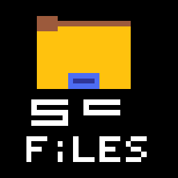

SC Files
Dosya yükle ve paylaş
Henüz dosya seçilmedi.
Önemli
Dosya 0x0.st adlı üçüncü taraf hizmete yüklenir ve bağlantıya sahip kişilerce erişilebilir. Dosyalar geçicidir; kalıcı saklama garantisi yoktur. Özel veya hassas dosya yükleme. Scratch'in kendi yorumları dosya eki/kartı desteklemez; yorumda bağlantı görünür.